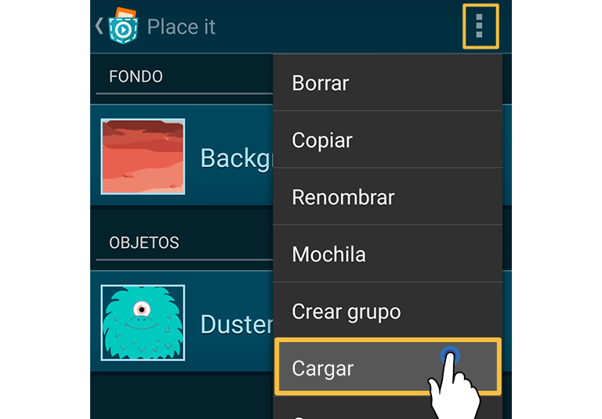
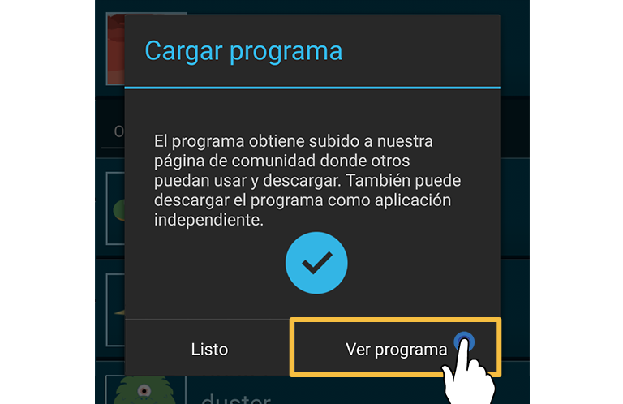

¿Cómo participar?
Decide si quieres trabajar por tu cuenta o en un equipo. Si quieres participar junto con sus compañeros de clase, por favor, díselo a tu profesor. Siga los "Primeras Pasos y Reglas" y empieza a crear tu proyecto Pocket Code.
¿Cómo aprender a programar?
Si no tienes ninguna experiencia en programación, no tengas miedo, ¡es más fácil de lo que piensas! El botón de "Ayuda" dentro de la app Pocket Code te guía a un tutorial resumido donde hemos proporcionado algunos grandes ejemplos para principiantes. Además, hay una gran comunidad detrás de Pocket Code que aporta un enorme montón de programas en la web desde la que puedes tomar inspiración. Puedes encontrarlos haciendo clic en el botón "Explorar" dentro de la aplicación Pocket Code.
Encuentra los materiales adecuados para tu programa
Para hacerlo más fácil para ti te proporcionamos medios especiales que puedes utilizar durante el game jam. Por favor lee nuestras Preguntas Frecuentes para obtener más información acerca de la biblioteca de medios.
Primeros Pasos y Reglas
Si trabajas en un equipo, por favor elige un nombre de equipo. Si quieres participar como una clase completa, ponte en contacto con tu maestro para que él o ella puede rellenar el formulario de solicitud.
En primer lugar, echemos un vistazo a la biblioteca de medios en la que hemos preparado unos impresionantes gráficos para ti. Puedes utilizarlos para hacer tu programa más colorido y te darán algunas buenas ideas para tu app. Por supuesto puedes utilizar gráficos de otros, pero por favor respeta los derechos de autor y los requisitos de licencia.
Como el programa tiene que incluir el tema del espacio exterior, deberás pensar sobre qué tipo de programa (juego, animación, etc.) deseas crear. Podrías tener algunas buenas ideas después de echar un vistazo a los recursos de la biblioteca de medios.
Para hacer tu aplicación más interesante puedes implementar algunas de las siguientes características (son opcionales, y no todas encajan en cualquier programa):
★ Ana pantalla de bienvenida
★ Una breve descripción
★ Una pantalla "¡Has ganado!"
★ Una pantalla de fin del juego
★ Sonidos o música
★ Sensores
★ Un segundo nivel
★ Colisiones
★ Una lengua extranjera
Envío
Cuando hayas terminado tu aplicación, súbela a pocketcode.org para presentarla. Puedes hacerlo fácilmente haciendo clic en el menú superior.

Después de haberte identificado o registrado, se muestra el diálogo de subida. Ahí puedes cambiar el nombre de tu juego y también agregar una descripción. Por favor incluye la etiqueta #GalaxyGameJam. Después de pulsar 'Subir' se muestra un cuadro de diálogo indicando que ahora puedes ver tu programa ya subido a nuestra comunidad web. Pulsa 'Mostrar programa'.

Ahora puedes ver tu programa en nuestra comunidad web. Durante este evento hemos añadido un botón para la presentación. Sólo baja un poco y pulsa el botón Enviar para presentar tu programa.
Después de esto, necesitas rellenar el formulario de envío. Ahora tu programa se mostrará en nuestro Muro de la Fama. Por favor, ten en cuenta que puedes adaptar y volver a subir el programa con el mismo nombre tantas veces como quieras hasta el 31/12/2016 23:59 (AoE = UTC-12 zona horaria).